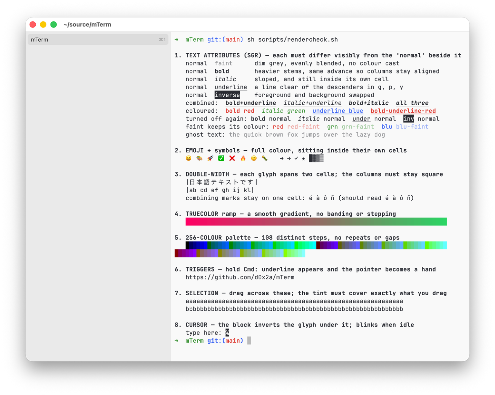
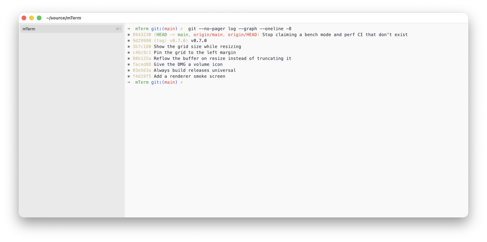

scripts/rendercheck.sh — bold, italic, underline, faint and inverse, truecolor, the 256-colour palette, emoji, double-width CJK and combining marks, all in one screen.Why
mTerm is an alternative to iTerm2 for developers who want:
- A terminal that feels like a real Mac app, not a port.
- GPU-class rendering (Ghostty/Alacritty territory).
- A small, sharp feature set instead of a thousand preferences.
Features
- AppKit-native window with a tabbed sidebar you can drag to reorder, full screen, and session restore of tabs and working directories.
- Metal-rendered text through a pixel-snapped glyph atlas: crisp at every size, with no GPU filtering blur.
- Bold and italic use the font's own faces, never a synthesised slant or smear, and all four faces share one advance so columns never drift. Underline, faint and inverse work too, including the codes that turn each of them back off.
- Resizing reflows the buffer: wrapped lines rejoin and re-split at the new width instead of being cut off, and a readout shows the grid size while you drag.
- xterm-256color compatibility for vim, neovim, htop, fzf, less and git pagers, with 24-bit colour, the alternate screen, scroll regions, DEC line drawing and synchronized output (DEC 2026) so multi-line redraws land in one frame.
- Mouse reporting in SGR and legacy encodings for click, drag, motion and wheel (hold ⇧ to select instead), plus bracketed paste, focus events and cursor-position reports.
- East Asian and fullwidth characters take their proper two columns, and combining marks compose into the glyph they follow, so CJK text stays in step with the shell's own cursor arithmetic.
- Scrollback search: plain text by default, regex via ⌥⌘F, smart-case.
- Prompt markers in the gutter, colour-coded by exit status, and ⌘↑ / ⌘↓ to jump to the previous or next prompt.
- Themes: Tomorrow Night, Solarized light and dark, Nord, Dracula, Gruvbox Dark, and mTerm's own light and dark. Import any iTerm2
.itermcolorsfile. The sidebar tints to the active theme, and light/dark switching follows the system appearance. - macOS notifications for terminal attention events (bell, OSC 9, OSC 777), configurable in Settings.
- ⌘-click opens links: URLs with or without a scheme go to the browser, and file paths are revealed in Finder. Only the link under the pointer is highlighted, and only paths that exist on disk are offered.
- Close confirmation when a foreground process such as vim or ssh is running, which you can turn off.
- Font family, size, stroke weight and line spacing (1.0×–2.0×, default 1.15×) all adjust live from the Settings window.
- Shell integration for zsh, bash and fish.
- Profiles: a name, a command, a starting directory, environment variables and an optional theme override.
- A triggers editor: match a pattern in output and highlight it, make it clickable, or run a command.
- tmux control mode (
tmux -CC), with each tmux window as a native tab. - Searchable Settings.
- Configurable scrollback size.

What it is not
mTerm is not trying to be Warp. There are no AI features, no command palettes that rethink the shell, and no cloud accounts. There are no split panes either: one shell per tab, and tmux inside a tab when you want panes.
Keyboard shortcuts
| Action | Shortcut |
|---|---|
| New tab | ⌘T |
| Close tab | ⌘W |
| Next / previous tab | ⌘⇧] / ⌘⇧[ (also ⌘` / ⌘⇧`) |
| Jump to tab N | ⌘1 – ⌘9 (⌘9 = last) |
| Find in scrollback | ⌘F |
| Find (regex) | ⌥⌘F |
| Next / previous match | ⌘G / ⇧⌘G |
| Jump previous / next prompt | ⌘↑ / ⌘↓ |
| Toggle full screen | ⌃⌘F |
| Open Settings | ⌘, |